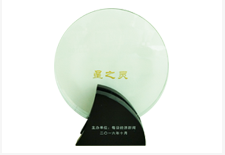
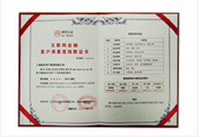

平台荣誉
-

2016互联网金融行业总评榜年度成长突破奖
2016年10月28日，每日经济新闻主办的"2016中国互联网金融规范与发展高峰论坛"在深圳落幕。 本次论坛聚焦当前互联网行业的风险防范与创新实践,星之灵以极具品牌影响力的口碑和在互联网 金融行业的创新发展战略,获得"2016互联网金融年度成长突破奖"。
-

星灵资产成为上海金融信息行业协会会员单位
2016年6月,星之灵再次传来喜讯:经上海金融信息行业协会审定,上海星之灵资产管理有限公司符合 《上海金融信息行业协会章程》的规定,同意接纳星灵资产成为会员单位。
-

互联网金融客户满意度指数证书
2016年3月，iTrust互联网信用中心针对星之灵的客户满意度状况进行了尽职调查和测评，星之灵通过优质 的客户服务、完善的网站运营体系和好评如潮的客户口碑荣获了88%（满意）的测评结果。正式颁发了《互联网金融客户满意度指数证书》